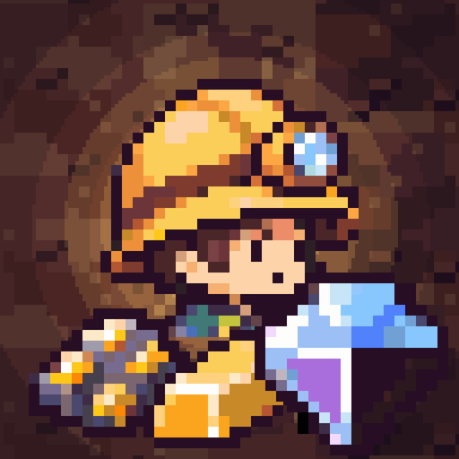
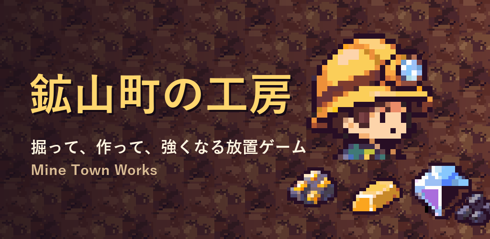
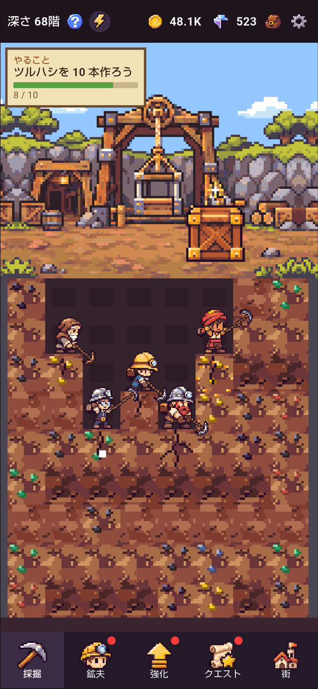
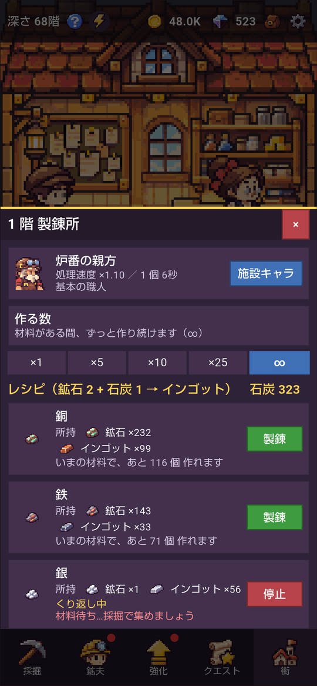
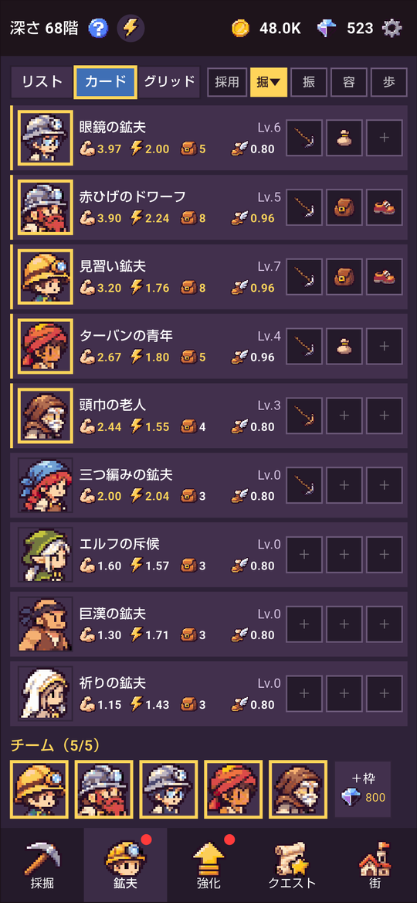
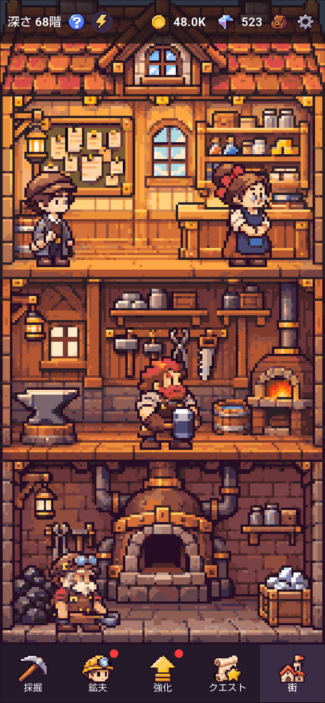
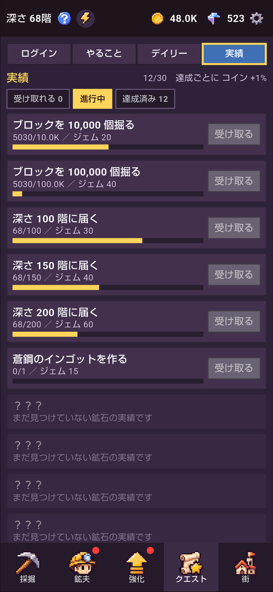

Google Play で配信中
鉱山町の工房
MINE TOWN WORKS
掘って、作って、強くなる。ドット絵の鉱山町
鉱夫が鉱山を掘り、街の製錬所・鍛造所で加工して、ツルハシを作って鉱夫を強くする放置ゲームです。


MINE TOWN WORKS
掘って、作って、強くなる。ドット絵の鉱山町
鉱夫が鉱山を掘り、街の製錬所・鍛造所で加工して、ツルハシを作って鉱夫を強くする放置ゲームです。

How to play
画面の土をタップして掘れます。仲間の鉱夫は、自分で掘って、掘ったものを昇降機まで運んでくれます。

掘った鉱石は、街の製錬所でインゴットに、鍛造所でツルハシに作り変えます。

作ったツルハシを鉱夫に持たせると、掘る力と速さが上がります。深く掘るほど、新しい鉱石に出会えます。

Features
鉱山で掘る鉱夫と、街で働く職人たち。一人ひとりに固有の能力があります。
鉱石もツルハシも、たくさんの種類があります。段階ごとにツルハシがぐんと強くなります。
アプリを閉じているあいだも、鉱夫と街は働き続けます。次に開いたときの報酬が楽しみに。
仲間と装備は残したまま、永続の強化を得て、もう一度掘り直せます。
機能は少しずつ開いていき、そのたびに案内が出ます。
デイリー、ログインスタンプ、実績、ときどき届く差し入れの木箱。ガチャ（確率で出るもの）はありません。
Screenshots
← スワイプまたはスクロールで確認できます


Story
個人で開発しています。コツコツ育てて、ものづくりの成長を眺める。そんな放置ゲームを、ドット絵の見た目にこだわって作りました。
広告は、自分で選んで見る動画広告だけです。見なくても遊べます。詳しくはプライバシーポリシーをご覧ください。
こんな方に使っていただけたら嬉しいです。
FAQ